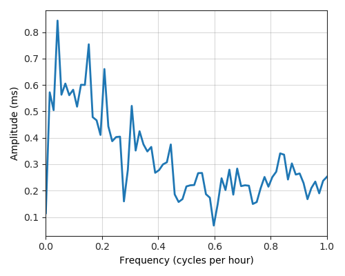

---
layout: default
title: Last-mile delay survey / 2019-09-01 / AS31042
---
AS31042, SERBIA-BROADBAND-AS Serbia BroadBand-Srpske Kablovske mreze d.o.o., RS
Summary
- Daily last-mile fluctuations: low
- Number of probes: 11
- APNIC eyeball rank: 380
- Daily fluctuations: True
- Main frequency: 0.0417
- Average peak-to-peak amplitude: 0.84ms
Aggregated last-mile queuing delay
Periodogram

24H profile
Probes' last-mile RTT